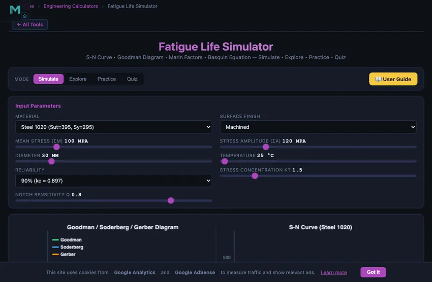

Fatigue Life Calculator
S-N Curve • Goodman Diagram • Marin Factors • Basquin Equation — Simulate • Explore • Practice • Quiz
Input Parameters
1 Overview
The Fatigue Life Calculator predicts component fatigue behaviour using the S-N curve (Basquin’s equation), Goodman diagram, and Marin correction factors. It supports 6 materials, 4 surface finishes, adjustable stress concentration (Kt), notch sensitivity (q), reliability levels, and temperature effects. The simulator plots both the S-N curve and the Goodman/Soderberg/Gerber failure criteria simultaneously.
Fatigue failure accounts for an estimated 80–90% of all structural failures in service. Unlike static overload, fatigue occurs at stress levels well below the ultimate tensile strength under repeated cyclic loading. The endurance limit (Se) is the stress amplitude below which a steel component can theoretically survive infinite cycles. This simulator helps you understand how material, geometry, surface finish, and loading conditions affect Se and fatigue life.
2 Entering the Inputs
The simulator opens in Simulate mode with Steel 1020, machined surface, σm = 100 MPa, σa = 120 MPa, 30 mm diameter, 25°C, 90% reliability, Kt = 1.5, and q = 0.8. The canvas displays two diagrams: the S-N curve (stress amplitude vs. cycles on log scale) and the Goodman diagram (σa vs. σm with Goodman, Soderberg, and Gerber lines).
Below the canvas, readout cards show the corrected endurance limit Se, individual Marin factors (ka through ke), predicted life in cycles, safety factors for each criterion, and the operating point on the Goodman diagram. Adjust any input slider or dropdown to see instant updates.
The SI / Imperial switch in the mode bar restates the whole problem in US fatigue-design units: stresses in ksi, diameter in inches, temperature in °F. The material list re-labels its Sut and Sy values too, and both diagrams relabel their stress axes and tick numbers. Cycle counts and every safety factor are dimensionless, so they read the same in either system — a useful check that the switch is display-only. Practice and Quiz problems stay in MPa because their given values are fixed textbook statements.
3 Reading the Result
Select a Material from 6 options (Steel 1020, Steel 4140, Steel 4340, Al 6061-T6, Al 7075-T6, Ti-6Al-4V), each with specific Sut and Sy values. Choose a Surface Finish (Ground, Machined, Hot-rolled, Forged) to set the Marin surface factor ka.
Set the Mean Stress σm (0–500 MPa) and Stress Amplitude σa (10–500 MPa) using sliders. Adjust Diameter (5–150 mm) for the size factor kb, Temperature (20–700°C) for kd, Reliability (50–99.9%) for kc, and Stress Concentration Kt with Notch Sensitivity q for ke.
The corrected endurance limit is Se = ka × kb × kc × kd × ke × Se′, where Se′ = 0.5 × Sut for steels (capped at 700 MPa). The operating point (σm, σa) is plotted on the Goodman diagram — if it falls inside the safe region, the component has infinite life; if outside, the predicted number of cycles to failure is computed from the S-N curve.
4 The Formulas Behind It
Explore mode presents concepts in four categories: Fundamentals (fatigue mechanism, crack initiation and propagation, endurance limit), S-N Curve (Basquin’s equation, low-cycle vs high-cycle fatigue, endurance limit for steels vs aluminium), Mean Stress (Goodman, Soderberg, Gerber criteria, comparison of conservatism), and Design Factors (Marin factors ka–ke, Miner’s rule for variable amplitude, safe-life vs damage-tolerance design).
Each concept includes a formula card and worked example. Pay special attention to the distinction between steels (which have a true endurance limit) and aluminium alloys (which do not — they continue to lose strength at higher cycles).
5 Try a Problem
Practice mode generates random fatigue problems. You might be asked to calculate the corrected endurance limit, find the Goodman safety factor, or predict cycles to failure. Enter your answer, click Check Answer, and review the step-by-step solution. Click Next Problem for another challenge. Your running score is tracked.
Quiz mode presents 5 multiple-choice questions covering S-N curve interpretation, mean stress effects, Marin factor application, and fatigue life prediction. After completing all questions, a detailed result panel shows your score with a star rating and per-question review.
6 Engineering Notes
- For steels with Sut ≤ 1400 MPa, the uncorrected endurance limit is Se′ ≈ 0.5 × Sut. Above 1400 MPa, cap Se′ at 700 MPa.
- The Goodman criterion (σa/Se + σm/Sut = 1/n) is the most commonly used mean-stress criterion in industry.
- Soderberg is more conservative (uses Sy instead of Sut), while Gerber fits experimental data better for ductile metals.
- Surface finish has a huge impact: a forged surface can reduce Se by 50% or more compared to a ground surface.
- The fatigue stress concentration factor Kf = 1 + q(Kt − 1). Lower notch sensitivity q reduces the effect of geometric stress raisers.
- Miner’s rule for variable amplitude: failure occurs when Σ(ni/Ni) = 1. Each stress level consumes a fraction of total life.
- Try increasing the temperature above 450°C and observe how kd drops sharply — high-temperature fatigue strength is significantly lower.
Understanding Fatigue Life Analysis — S-N Curves, Goodman Diagrams & Endurance Limits

Fatigue failure is one of the most common causes of mechanical component failure in service, responsible for an estimated 80-90% of all structural failures. Unlike static overload, fatigue occurs under cyclic loading at stress levels well below the material's ultimate tensile strength. This free interactive fatigue life simulator lets you explore S-N curves, Goodman diagrams, Marin correction factors, and multiple mean-stress criteria to predict whether a component will survive its intended service life.
The S-N Curve and Basquin's Equation
The S-N curve (also called a Wohler curve) is the foundation of fatigue analysis. It plots stress amplitude on the vertical axis against the number of cycles to failure (N) on a logarithmic horizontal axis. In the high-cycle fatigue regime, this relationship follows Basquin's equation: σa = σ'f (2N)b, where σ'f is the fatigue strength coefficient and b is the fatigue strength exponent (typically -0.05 to -0.15). For steels, an important feature is the endurance limit (Se') — a stress level below which the material can theoretically endure infinite cycles. For Sut ≤ 1400 MPa, Se' ≈ 0.5 × Sut.
Marin Correction Factors
The laboratory endurance limit must be corrected for real-world conditions using the Marin equation: Se = ka × kb × kc × kd × ke × Se'. The surface factor (ka) accounts for roughness — a forged surface may reduce fatigue strength by 50% compared to a polished specimen. The size factor (kb) reflects that larger components have more potential crack initiation sites. Reliability (kc), temperature (kd), and miscellaneous factors including stress concentration (Kf) further modify the allowable endurance limit.
Mean Stress Effects: Goodman, Soderberg & Gerber
Most real-world loading involves a non-zero mean stress. The Goodman criterion (σa/Se + σm/Sut = 1/n) provides a linear, moderately conservative prediction. Soderberg replaces Sut with Sy for greater conservatism, while Gerber's parabola fits experimental data more accurately for ductile metals. This simulator plots all three criteria simultaneously, allowing direct comparison of safety factors for any operating condition.
Cumulative Damage and Miner's Rule
When components experience variable-amplitude loading, Miner's rule predicts failure when the cumulative damage fraction D = Σ(ni/Ni) reaches 1.0. Each load level consumes a fraction of the total fatigue life. This simple linear damage model, while not perfect, remains the most widely used method in engineering practice for variable loading fatigue analysis.
Why 80% of Mechanical Failures Are Fatigue
The statistic that opens every fatigue textbook is genuine: roughly 80% of in-service mechanical-component failures are fatigue, not static overload. Bridges, aircraft, railway axles, crankshafts, wind-turbine blades — the common failure mode is cracks growing slowly under cyclic loading until reaching critical length, then suddenly fracturing. The failures are insidious because they happen at stresses well below yield. A part that looks fine for 99% of its life shows no warning of impending failure.
The historical record is dramatic. The de Havilland Comet aircraft failures of 1954 (fatigue at window corners) grounded the world’s first jet airliner. The Aloha Airlines Flight 243 incident in 1988 (fatigue at lap joint rivet holes) tore the top off a 737 in flight. The I-35W Mississippi River bridge collapse in 2007 originated at fatigue cracks in undersized gusset plates. Each disaster pushed fatigue analysis from a research topic into a regulatory requirement.
A Crankshaft Worked Example
An engine crankshaft sees alternating bending stress σa = 150 MPa with mean stress σm = 50 MPa per revolution. Material is AISI 4140 steel with Sut = 1000 MPa, Sy = 700 MPa. Predict fatigue life.
| Step | Working | Result |
|---|---|---|
| Laboratory endurance limit | Se' = 0.5 × Sut = 0.5 × 1000 | 500 MPa |
| Apply Marin factors (typical for crankshaft): ka=0.85, kb=0.85, kc=0.9, kd=1.0 | Se = 0.85×0.85×0.9×500 | 325 MPa |
| Stress concentration at fillet Kf = 1.5 | Se,corrected = 325/1.5 | 217 MPa |
| Apply Goodman criterion | σa/Se + σm/Sut = 150/217 + 50/1000 | 0.741 |
| Safety factor (Goodman) | n = 1/0.741 | 1.35 |
A safety factor of 1.35 is borderline for a critical component. Most automotive crankshafts target FOS ≥ 2.0 against fatigue, requiring either lower stress (bigger fillet, larger journal diameter), better material (8620 carburised), or shot peening (which improves ka by ~20%). The simulator’s Marin factor sliders let you experiment with each variable.
Where Real Fatigue Analysis Goes Beyond Goodman
- Variable-amplitude loading. Real components see varying load histories, not pure sinusoids. Miner’s rule sums damage from different stress levels.
- Crack-growth (Paris law) analysis. Once a crack initiates, da/dN = C(ΔK)m governs how fast it propagates. Critical for safety-critical components where inspection intervals depend on crack-growth rates.
- Multiaxial fatigue. Most real components see combined bending + torsion + axial loading. Critical-plane methods (Findley, Fatemi-Socie) extend Goodman to multiaxial states.
- Probabilistic fatigue. Scatter in fatigue data is huge — a factor of 5 in life between specimens is normal. Modern design uses statistical methods (Weibull distribution) to set life with specified confidence.
References
- Shigley & Mischke — Mechanical Engineering Design, 10th ed., Chapter 6 (Fatigue Failure).
- Suresh, S. — Fatigue of Materials, 2nd ed., Cambridge. The graduate reference.
- ASTM E466 — Standard Practice for Conducting Force-Controlled Constant-Amplitude Axial Fatigue Tests.
- FKM Guideline — Analytical Strength Assessment of Components in Mechanical Engineering. The German engineering reference now widely used internationally.
Explore Related Simulators
If you found this fatigue life simulator helpful, explore our Stress-Strain Diagram Trainer, Mohr's Circle Simulator, Stress Concentration Simulator, and Shaft Torsion Simulator for more hands-on practice.